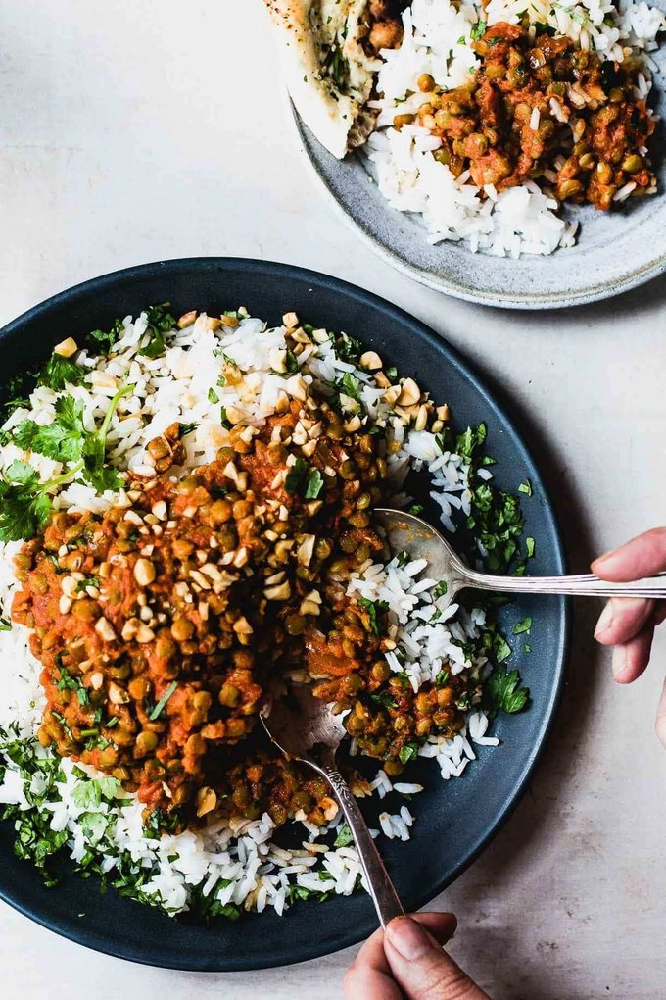

Red Curry Lentils

What Red Curry Is To Me
These red curry lentils are one of my all-time favorite recipes. As is usually my vibe, we’re working with very basic pantry ingredients here and simple, straightforward prep. It’s hard to mess this one up.
Just cook your lentils and toss them in up this spicy red curry sauce with sauteed onions and a shot of coconut milk. OH MY PERFECTLY SPICY GOODNESS.
I’ve kind of had a fling with lentils lately. Or wait, like, over the last 8 years. I can barely stand it. If you’ve never made lentils before, this is a perfect recipe to introduce you to the magic of the most cheap, healthy, versatile, and absolutely delicious little food in the pantry. The Humble Lentil reigns supreme.
Will you eat a big plate of these red curry lentils with rice? Or will you scoop up a creamy bite with a warm piece of naan? Or will you eat it cold out of the fridge with exactly zero judgement from me?
Only Time Will Tell.
Ingredients
- 1 1/2 cups lentils, rinsed and picked over
- 1/2 large onion,diced
- 2 tablespoons butter
- 2 tablespoons red curry paste
- 1/2 tablespoon garam masala
- 1 teaspoon curry powder
- 1/2 teaspoon turmeric
- 1 teaspoon sugar
- 1 teaspoon garlic, minced
- 1 teaspoon ginger, minced
- a few good shakes of cayenne pepper
- 1 14-ounce can tomato puree
- 1/4 cup coconut milk or cream
- cilantro for garnishing
- rice for serving
Steps
- Cook the lentils according to directions. Drain and set aside.
- Melt the butter in a large saucepan over medium high heat. Add the onion and saute for a few minutes until fragrant and golden. Add all the spices (curry paste, garam masala, curry powder, turmeric, cayenne, sugar, garlic, ginger) and stir fry for 1-2 minutes. Add the tomato puree; stir and simmer until smooth.
- Add the lentils and the cream. Stir to combine and simmer for another 15-20 minutes (the longer, the better)! Serve over rice and garnish with cilantro.